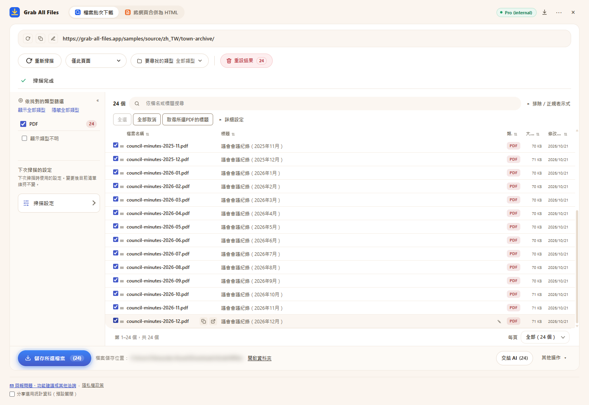

Grab All Files 的實際輸出
一次下載 24 份 PDF（Pro）
掃描虛構城鎮的議會會議紀錄典藏（2025年1月至2026年12月，每月一份，共 24 份 PDF），選取全部 PDF 並一次儲存。免費版每次下載最多儲存 10 個檔案，所以這些需要分三次執行；Pro 則沒有每次下載的數量限制。檔名是擴充功能依各 PDF 的標題命名的。
輸出檔案
- 議會會議紀錄（2025年1月）.pdf
- 議會會議紀錄（2025年2月）.pdf
- 議會會議紀錄（2025年3月）.pdf
- 議會會議紀錄（2025年4月）.pdf
- 議會會議紀錄（2025年5月）.pdf
- 議會會議紀錄（2025年6月）.pdf
- 議會會議紀錄（2025年7月）.pdf
- 議會會議紀錄（2025年8月）.pdf
- 議會會議紀錄（2025年9月）.pdf
- 議會會議紀錄（2025年10月）.pdf
- 議會會議紀錄（2025年11月）.pdf
- 議會會議紀錄（2025年12月）.pdf
- 議會會議紀錄（2026年1月）.pdf
- 議會會議紀錄（2026年2月）.pdf
- 議會會議紀錄（2026年3月）.pdf
- 議會會議紀錄（2026年4月）.pdf
- 議會會議紀錄（2026年5月）.pdf
- 議會會議紀錄（2026年6月）.pdf
- 議會會議紀錄（2026年7月）.pdf
- 議會會議紀錄（2026年8月）.pdf
- 議會會議紀錄（2026年9月）.pdf
- 議會會議紀錄（2026年10月）.pdf
- 議會會議紀錄（2026年11月）.pdf
- 議會會議紀錄（2026年12月）.pdf
已選取 24 份 PDF、即將儲存的擴充功能畫面（儲存位置已模糊處理）

製作方式
- 來源頁面
- /samples/source/zh_TW/town-archive/
- 擴充功能
- Grab All Files 5.8.31
- 瀏覽器
- Chrome 156.0.8078.48 (Windows 11)
- 方案
- Pro
- 製作日期
- 2026-10-28
- 設定
- 連結深度：僅此頁面
- 檔案類型：僅 PDF
- 已選檔案：24
- 儲存位置：瀏覽器的下載資料夾（GrabAllFiles 資料夾）